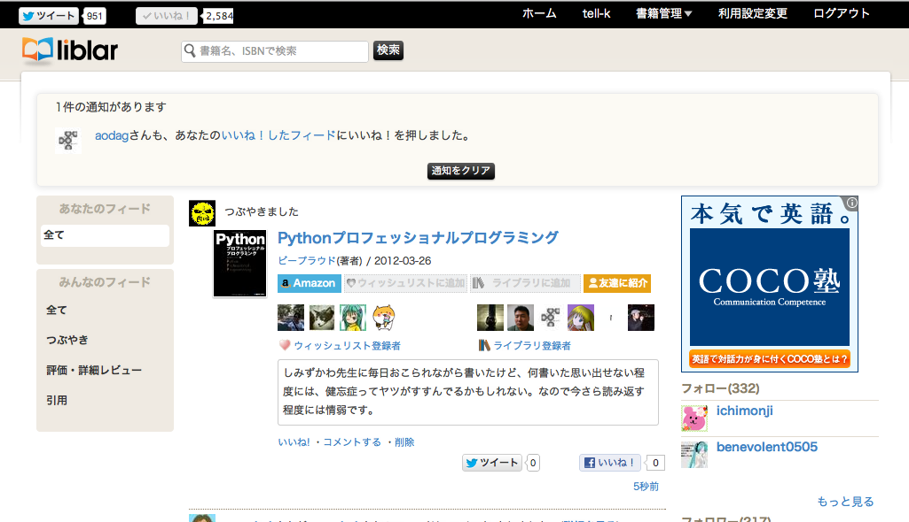
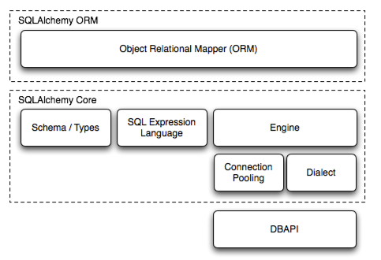
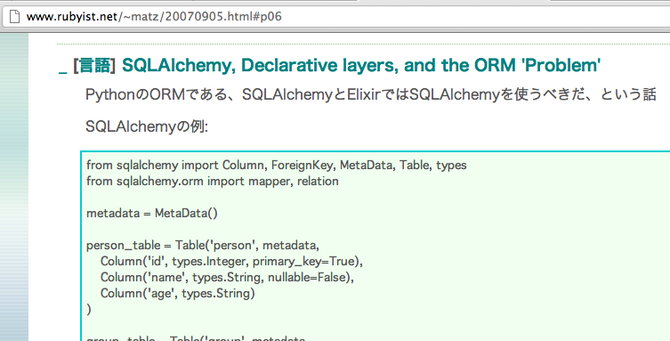

構造化照会言語的錬金術和我
SQLAlchemyと僕
Pycon JP 2012
おまえだれだよ?
- 名前: tell-k(Kida Teruhiko)
- 所属: Beproud.inc (窓際)
- Python歴: 1年半位
- それまではずっとPHPer
- Twitter: tell_k

Liblar
Connpass
(僕は開発していませんが。。)
対象とする人
- SQLAlchemyとか始めて見ようと思う人
- Django以外のフレームワークでも開発してみたい人
- ORMてそもそもどんなんよ？て人
- (僕のような)情弱な人
アジェンダ
- SQLAlchemyとは
- 特徴的な機能
- 周辺ツール
- まとめ
SQLAlchemyとは
- The Python SQL Toolkit and Object Relational Mapper
SQL Toolkit
と
Object Relational Mapper
構成
実績


refs: http://www.sqlalchemy.org/organizations.html
Rubyのパパも気にするSQLAlchemy
refs: http://www.rubyist.net/~matz/20070905.html#p06
ORMで良くある話し
ActiveRecord
or
DataMapper
SQLAlchemyはDataMapper
ActiveRecordに近い利用も可能
refs:http://martinfowler.com/eaaCatalog/activeRecord.html
refs:http://martinfowler.com/eaaCatalog/mapper.html
簡単に説明
はー面倒
ポイント
- decreative_baseを利用すれば直感的にテーブルを定義できる
- Mappingを意識せずに、ActiveRecordのような感覚で使える
- 実際は最初の例のように、単なるオブジェクトにTableオブジェクトがマッピングされてるだけ
refs: http://docs.sqlalchemy.org/en/rel_0_7/orm/tutorial.html
特徴的な機能
- Session
- Query
- RelationShip
Session
- DBとのやり取りを担当する
- DBから読み出したオブジェクトに対する、変更、削除した内容を「保存しておく場所」
- 適切なタイミングで保存した内容をDBに反映 => flush
- Unit of Work -> 変更した履歴を保持
- Identity Map -> ロードされたオブジェクトを保持
Unit of Work
Unit of Work Sample1
Unit of Work Sample1
まとめてインサート
Unit of Work Sample2
Unit of Work Sample2
文脈に応じてFlush動作 => autoflush
Unit of Work Sample3
Unit of Work Sample3
オブジェクトの変更履歴にも追従
なんとなく賢い
Identity Map
Identity Map Sample
同一のオブジェクト
Scoped Session
- ThreadLocalにDBセッション保持している
- 同一スレッド内であれば、DBセッションを共有できる
- マルチスレッドで実行してるWebアプリとかで、1リクエスト内でDBセッションを共有したい時に使う
Query
- SQLを実行するためのオブジェクト
- Queryオブジェクトの様々なメソッドで柔軟にSQLを構築、実行
Query Sample1
Query
- Queryは結果取得のメソッドを呼ばない限りQueryオブジェクトを返す
- 結果取得をしない限りSQLは発行されない
Query Sample2
Query Sample3
俺もうこんな事しなくていいんだ
Query
- 大概のSQLは表現できるし、サポートされている
- 当然、生のSQLを書く事もできる
- ORM採用したのに生SQLを書いた時の残念な感じを押さえられる
- 各DBMSの方言、差異を吸収しているDialectsというパッケージ
- この辺をみるといいかも
- http://docs.sqlalchemy.org/en/rel_0_7/dialects/index.html
まさしくSQL Toolkit
RelationShip
- テーブル間の関係を表現してくれる。
- 参照先、参照元のデータを柔軟に操作できる
RelationShip
外部キーを外したい
- 元は一つのDBだったけど、DB分けたい時とか
- なるべく既存のコードを手を入れたくない
- relationshipはそんな時に役に立つ
- EntryとCommentを別のDBに垂直分散する
外部キー外す
明示的にリレーションを指定する事で、外部キーがなくてもリレーションが表現できる
DBを分割する
DBを分割する
DBを分割してもrelationshipはそのまま動作
モデルを利用しているコードには修正が不要
Eager Loading
lazyパラメータで参照先のオブジェクトを取得する際の挙動を変える
Eager Loading
Eager Loading
Eager Loading
Eager Loading
周辺ツール
Elixir
- SQLAlchemyの柔軟性を生かしてActiveRecordを実現するライブラリ
- よりActiveRecordに近いものをお探しの時はいいかも
- ただ2009年あたり位から停滞している感じが。。
- http://elixir.ematia.de/trac/wiki
SQLAHelper
- SQLAlchemyをWebアプリで利用するためのショートカットを提供
- 元々はPyramid用に書かれたライブラリ
- http://sluggo.scrapping.cc/python/SQLAHelper/usage.html
Flask-SQLAlchemy
- Flask用のextensionとして用意されたライブラリ
- 作者はmitsuhiko氏
- http://packages.python.org/Flask-SQLAlchemy/
Alembic
- DBマイグレーションツール
- sqlalchemy-migrateよりも良さげ
- 作者がzzzeek氏 = SQLAlchemy本体の作者
- a○dagさんが良いといってました。
- http://alembic.readthedocs.org/en/latest/index.html
FormAlchemy
- Formライブラリ
- refs: http://docs.formalchemy.org/
- refs: http://www.slideshare.net/aodag/form-libraries-9031180
まとめ
まとめ
- SQLAlchemyはDataMapperタイプのORM
- SessionはUnitOfWorkパターンで動作している
- Queryで柔軟にSQLを構築する事ができる
- RelationShipでリレーションを賢く表現
- 周辺ツール
難しい事ができるだけ！
難しく使う必要はないよ!